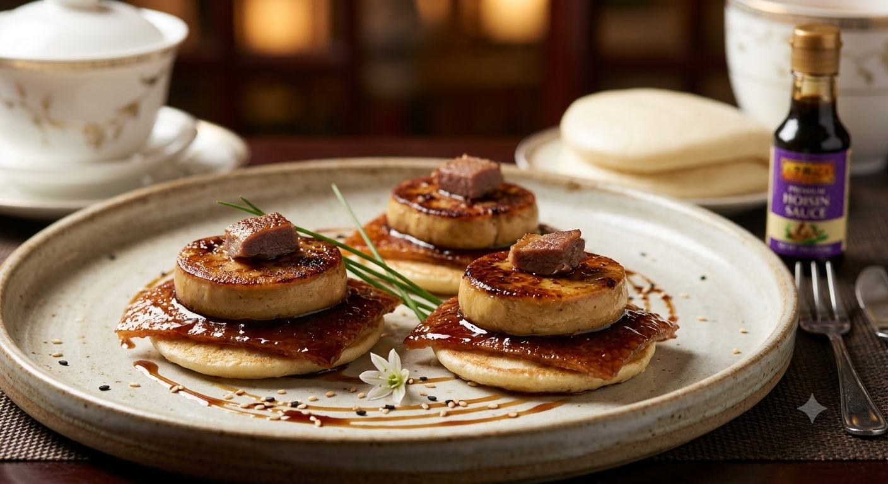

Culinary Encounter
Peking duck meets foie gras — a delightful East-West fusion.

Fusion Dish
Cultural fusion in cuisine is far more than a mere trend; it is a profound expression of human connection and historical evolution.
Meaning Behind the Fusion
Bridging Perspectives: Food acts as a universal language. By blending flavors from East and West, chefs transcend geographical boundaries.
Celebrating Innovation: Culinary fusion encourages experimentation, proving that heritage is a living, growing entity.
Promoting Mutual Understanding: Eating a fusion dish is an act of cultural diplomacy, fostering curiosity and respect.
Ultimately, cultural fusion in dining reflects our shared global experience.